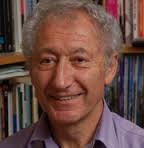
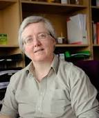
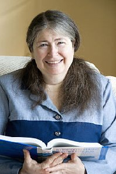

THE HEBREW UNIVERSITY OF JERUSALEM
ISRAEL INSTITUTE FOR ADVANCED STUDIES
http://www.as.huji.ac.il/
The Ada Lovelace Bicentenary Lectures
on
Computability
January, 2016
For full list of speakers, December to January, see:
http://ias.huji.ac.il/adalovelacelectures
on
Computability
January, 2016
For full list of speakers, December to January, see:
http://ias.huji.ac.il/adalovelacelectures
All lectures held at the Israel Institute for Advanced Studies,
room 128 or room 130
Edmond J. Safra Building, Givat Ram Campus
__________________________________________________
Organizers:
Jack Copeland (University of Canterbury)
Eli Dresner (Tel-Aviv University)
Diane Proudfoot (University of Canterbury)
(The project)
__________________________________________________
Enquiries to:Jack Copeland (jack.copeland@canterbury.ac.nz)
or Eli Dresner (dresner@post.tau.ac.il)
Location, travel information, maps:
http://www.as.huji.ac.il/content/general-information
__________________________________________________
This web site is http://www.cs.bham.ac.uk/~axs/lovelace-jerusalem.html
PDF version http://www.cs.bham.ac.uk/~axs/lovelace-jerusalem.pdf
Last updated: Wed Jan 13 2016; 7 Apr 2016 (Videos added); 12 Aug 2018 (tidied)
Maintainer: A.Sloman
OVERVIEW WITH JANUARY TALK DETAILS BELOW
Links to videos added here 6 Apr 2016
Videos of lectures in December 2015
Monday, 21 December David Harel
Lecture 1 - Computability in the Footsteps of Turing - A Personal Trip
https://www.youtube.com/watch?v=IQoAN1pO9Xc
Tuesday, 22 December Yuri Gurevich
Lecture 2 - What is an algorithm?
https://www.youtube.com/watch?v=I3MSDETx2a8
Wednesday, 23 December Moshe Y. Vardi
Lecture 3 - Humans, Machines, and the Future of Work
https://www.youtube.com/watch?v=2rEcHbgXzkM
Thursday, 31 December Scott Aaronson
Lecture 4 - Explorations in Universality
https://www.youtube.com/watch?v=INxiZFTQPbc
Videos of lectures in January 2016: see below
Monday, 18 January
Aviezri Fraenkel
Lecture 5 - Weizac - An Interim Adventure Between Ada and Responsa
Lcture 6
Doron Swade (No Video)
Tuesday, 19 January
Lecture 7 - Zero Knowledge Proofs and Applications
Michael Rabin
(Video below)
Lecture 8 From Aristotle to the iPhone
Moshe Y. Vardi
(Video below)
Wed, 20 January
Lecture 9 - When Does a Slime Mould Compute?
Susan Stepney
(Video below)
Thursday, 21 January
Lecture 10-1 - Evolved Construction-kits for Building Minds, Part I
Aaron Sloman
(Video below)
Lecture 10-2 - Evolved Construction-kits for Building Minds, Part II
(Video below)
Monday, 25th January
Lecture 11 - Proving the Church-Turing Thesis
Nachum Dershowitz
(Video below)
Lecture 12 - Structure in the Theory of Computing
Avi Wigderson
(Video below)
Thursday, 28th January
Lecture 13 - How to Build an Insecure System out of Perfectly Good
Cryptography
Radia Perlman
(Video below)
TALKS FROM JAN 18 2016
(Most with videos)
Monday, 18 January
Monday 11:00-11:30
Opening Remarks.
Aviezri Fraenkel (Weizmann Institute of Science)
Weizac - An Interim Adventure Between Ada and Responsa
https://www.youtube.com/watch?v=JVRHkdrMeME
Monday 11:30 - 12:30 Doron Swade (Royal Holloway, University of London)
Myths and Method:
Ada Lovelace, Charles Babbage, and the First Computer Program (No video)
Monday 14:00 - 15:30 Q & A with Jo Francis (Flare Productions) and John Fuegi (University of Maryland) Screening of "To Dream Tomorrow" (No video)
Tuesday, 19 January
Tuesday 11:00 - 12:30 Michael Rabin (Harvard University)
Zero Knowledge Proofs and Applications
https://www.youtube.com/watch?v=N_LG5Hcc8mM
Tuesday 13:30 - 15:00
Jo Francis (Flare Productions) and John Fuegi (University of Maryland)
Looking for Lovelace: Tracking Ideas in Collaborative Work (No video)
Tuesday 16:00 - 17:00 Moshe Y. Vardi (Rice University)
From Aristotle to the iPhone
https://www.youtube.com/watch?v=9YmEFCWlNLI
Wednesday, 20 January
Wednesday 11:00 - 12:30 Susan Stepney (University of York
When Does a Slime Mould Compute?
https://www.youtube.com/watch?v=ucieO7trYGg
Wednesday 13:30 - 15:00 Shafi Goldwasser (MIT)
--- TALK CANCELLED ---
Thursday, 21 January
Thursday 11:15 - 12:15 Aaron Sloman (Birmingham University)
Evolved Construction-kits for Building Minds, Part I
https://www.youtube.com/watch?v=0OKM79N3ZOQ
Thursday 13:30 - 14:30 Sloman
Evolved Construction-kits for Building Minds, Part II
(Interactive discussion of themes from Part I)
https://www.youtube.com/watch?v=pvRXNG9RYTU
OVERVIEW CONTINUED
Monday 25 January
11:15 - 12:15 Nachum Dershowitz (Tel Aviv University)
Proving the Church-Turing Thesis
https://www.youtube.com/watch?v=vsdoPRVhv8k
16:00 - 17:30 Avi Wigderson (Institute for Advanced Study, Princeton)
Structure in the Theory of Computing:
Algorithms, Randomness, Cryptography and Hardness
https://www.youtube.com/watch?v=aDEfPfQS9_4
Thursday, 28 January
11:00 - 12:30 Radia Perlman (EMC Corporation)
How to Build an Insecure System out of Perfectly Good Cryptography
https://www.youtube.com/watch?v=OOg_mPxExi0
Sunday, 31 January
17:00 - 18:35 Stewart Shapiro (Ohio State University)
Computing with Numbers and Other Non-Syntactic Things
(No video available)
SPEAKER DETAILS
(Some images may no longer be available)
Monday, 18 January
10:45 - 11:00 Coffee and biscuits
Monday 11:00-11:30 Aviezri Fraenkel (Weizmann Institute of Science)
http://www.wisdom.weizmann.ac.il/~fraenkel/

Opening Remarks.
Weizac - An Interim Adventure Between Ada and Responsa
Abstract
Weizac, was designed and built in 1954/55 at the Weizmann
Institute of Science. We will attempt to convey the special
pioneering spirit prevailing while constructing the first digital
computer in the Middle East, its main characteristics and its
profound impact in catapulting the then 6-year old state of Israel
into the high-tech era that early. Time permitting, we will briefly
describe the Responsa Project, the first viable full-text retrieval
system, conceived 35 years before Google, whose first steps were
done on Weizac.
Monday 11:30 - 12:30 Doron Swade (Royal Holloway, University of London)
http://www.computerhistory.org/events/bio/Doron,Swade

Myths and Method:
Ada Lovelace, Charles Babbage, and the First Computer Program
Abstract
Any celebration of Ada Lovelace is founded on a single publication, her Notes, published in 1843, on Charles Babbage's Analytical Engine. Lovelace includes as an example a description of how the Analytical Engine could calculate Bernoulli numbers and for this she has become known as "the first programmer". I propose to examine the basis of this claim. For this I will review the trajectory of Babbage's calculating Engines - his motives for designing them, his aspirations for their use, and their design - interleaving into this Lovelace's own work. Finally, I examine the substance of Lovelace's contribution to computing. I suggest that Lovelace deserves to be celebrated as fully as she is, but not necessarily for the reasons most frequently given.
12:30 - 13:30 Lunch
Monday 13:30 - 14:00 Q & A with Doron Swade
Monday 14:00 - 15:30 Screening of "To Dream Tomorrow,"
an award-winning documentary on Ada Lovelace
Jo Francis (Flare Productions) http://www.mith.umd.edu/flare/about/
and John Fuegi (University of Maryland) http://www.english.umd.edu/users/jfuegi

Abstract
Screening of "To Dream Tomorrow" an award-winning 52-minute documentary film on Ada Lovelace and her work with Charles Babbage followed by discussion and Q+A with the Director-Researchers Jo Francis and John Fuegi.
15:30 - 16:00 Afternoon tea
Tuesday, 19 January
10:45 - 11:00 Coffee and biscuits
Tuesday 11:00 - 12:30
Michael Rabin (Harvard University)
http://www.seas.harvard.edu/directory/rabin

Zero Knowledge Proofs and Applications
Abstract
We shall present the surprising concept of Zero Knowledge
Proofs. A Prover knows a solution to a problem. He proves the
existence of a solution and his knowledge of it to a Verifier. This
is done in a Zero Knowledge fashion. Namely, the Verifier is
convinced of the truth of the above two statements but learns
nothing about the solution or anything else. We shall explain in
an easily understood way. We shall also present a simple novel
method for ZKPs and give important practical applications. The
lecture is self-contained and widely accessible.
12:30 - 13:30 Lunch
Tuesday 13:30 - 15:00 Jo Francis (Flare Productions) and John Fuegi (University of Maryland)
[details above]
Looking for Lovelace: Tracking Ideas in Collaborative Work
Abstract
Jo Francis and John Fuegi will address topics and issues touched upon in the documentary and their accompanying Annals article, including structure, ideas, and purposes of the combined "Translation and Notes," and some of the challenges of those seen as "Other" in history.
15:00 - 15:45 Afternoon tea
Tuesday 16:00 - 17:00 Moshe Y. Vardi (Rice University)
http://www.cs.rice.edu/~vardi/

From Aristotle to the iPhone
Abstract
Logic started as a branch of philosophy, going back to Greeks, who loved debates, in the classical period. Computers are relatively young, dating back to World War II, in the middle of the 20th century. This talk tells the story of how logic begat computing, tracing the surprising path from Aristotle to the iPhone. This is a story full of both intellectual drama, as well as real-life drama, with most of the characters dying young, miserable, or both.
Wednesday, 20 January
10:45 - 11:00 Coffee and biscuits
Wednesday 11:00 - 12:30 Susan Stepney (University of York)
https://www-users.cs.york.ac.uk/susan/

When Does a Slime Mould Compute?
Abstract
Some people are using billiard balls, chemicals, bacteria, slime
moulds, soap films, spaghetti, even black holes, as computers
(although some of these only in theory yet). But what does it
mean for such unconventional substrates to compute? I will
introduce our framework for physical computing, give
requirements for physical system to be used as a computer, and
show how some unconventional substrates are indeed computing,
and how others are not.
12:30 - 13:30 Lunch
Wednesday 13:30 - 15:00 Shafi Goldwasser (MIT)
--- TALK CANCELLED ---
https://www.csail.mit.edu/user/733

--- Talk cancelled ---
15:00 - 15:30 Afternoon tea
Thursday, 21 January
11:00 - 11:15 Coffee and biscuits
Thursday 11:15 - 12:15
Aaron Sloman (Birmingham University)
http://www.cs.bham.ac.uk/~axs

Evolved Construction-kits for Building Minds, Part I
Abstract
This will be a highly interactive tutorial introduction to the Turing-inspired
Meta-Morphogenesis Project, which brings together a host
of problems and ideas about evolution, how it started on a lifeless
planet, how natural selection produced branching layers of
construction kits (some physical, some abstract, and some hybrid),
and how these made possible increasingly complex and varied
morphologies and behaviours based on increasingly complex and
varied forms of information processing. Among many topics to be
discussed are the unknown evolutionary precursors to human
abilities to make mathematical discoveries leading up to Euclid's
Elements, and related aspects of human and animal visual abilities.
Support for Kant's philosophy of mathematics will be presented,
along with criticisms of the visual, mathematical, and linguistic
competences of current AI systems. Some possible ways of
overcoming those limitations will be considered, with implications
for current theories of how brains function.
An extended abstract will be made available here:
http://www.cs.bham.ac.uk/research/projects/cogaff/misc/links/lovelace-turing-jan-2016.html
More information on the Meta-Morphogenesis project is available
here:
http://www.cs.bham.ac.uk/research/projects/cogaff/misc/meta-morphogenesis.html
12:30 - 13:30 Lunch
13:30 - 14:30
Evolved Construction-kits for Building Minds, Part II
(Interactive discussion of themes from Part I)
14:30 - 15:00 Afternoon tea
A partly related talk will be given in ELSC at 5pm.
Monday, 25 January
11:15 - 12:15 Nachum Dershowitz (Tel Aviv University)
http://www.cs.tau.ac.il/~nachumd/Homepage.html

Proving the Church-Turing Thesis
Abstract
Ada Lovelace wrote presciently about the possibilities and limitations of
digital numerical calculations. She recognized that Babbage's Analytical Engine
was sui generis and wrote that "the engine [is] the material expression of any
indefinite function of any degree of generality and complexity." This we now
know was overstating her case. I will discuss the recent formalization of the
notion of effective computation and some of its consequences vis-a-vis
computability and complexity of computation.
12:30 - 13:30 Lunch
13:30 - 14:30 Q & A with the lecturer
15:30 - 16:00 Afternoon tea
Monday 16:00 - 17:30
Avi Wigderson (Institute for Advanced Study, Princeton)
http://www.math.ias.edu/avi/home

Structure in the Theory of Computing:
Algorithms, Randomness, Cryptography and Hardness
The world around us, namely nature, society, science,
mathematics,... presents us with a huge number and
variety of computational problems, and for each we seek
solutions which minimize various resources while
maintaining other desirable properties. The Theory of
Computation is charged with figuring out the feasibility
and costs of this multitude of problems. Surprisingly, the
past few decades of work have revealed remarkable
structure: this complex world of problems, resources and
properties clusters into few natural clusters which
furthermore have conceptual meanings. I will try to
survey some important aspects of this body of work,
including: the tools of reduction and completeness, the
reasons for clustering (which go to the very definition of
computation by Turing), and the major challenges for
better understanding of this universe.
Thursday, 28 January
10:45 - 11:00 Coffee and biscuits
Thursday 11:00 - 12:30 Radia Perlman (EMC Corporation)
http://internethalloffame.org/inductees/radia-perlman

How to Build an Insecure System out of Perfectly Good Cryptography
Abstract
Academics tend to focus on subtle properties of the mathematical
tools in cryptography. Industry standards bodies tend to fight over
the syntax of messages. Although both of these are important,
this talk focuses on broader system design issues that tend to get
neglected. Examples will show deployed systems and standards
that use perfectly good cryptography, but are insecure in practice,
as well as lessons to be learned from these examples.
12:30 - 13:30 Lunch
Sunday, 31 January
16:30 - 17:00 Afternoon tea
Sunday 17:00 - 18:35 Stewart Shapiro (Ohio State University)
https://philosophy.osu.edu/people/shapiro.4

Computing with Numbers and Other Non-Syntactic Things
Abstract
Michael Rescorla has argued that it makes sense to compute
directly with numbers, and he faulted Turing for not giving an
analysis of this. In line with a later paper of his, I'll argue that it
only makes sense to compute directly with syntactic entities, such
as strings on a given alphabet. Computing with numbers involves
issues of notation, and broader issues involving de re
propositional attitudes towards numbers and other non-syntactic
abstract entities.